[新竹] Friendy Pizzeria
| 餐廳名稱: | Friendy Pizzeria |
|---|---|
| 地 址: | 新竹市民族路61號 |
| 營業時間: | 週日～週六 11:30 - 22:00 每日營業 |
| 電 話: | 03 543 8796 |
到新竹市辦事情，時間也差不多到晚餐時段了，當然就近找個能停車的美食。 想到經營很多年的 Friendy ，停車停到東大橋下停車場，再走到 Friendy 還算近。 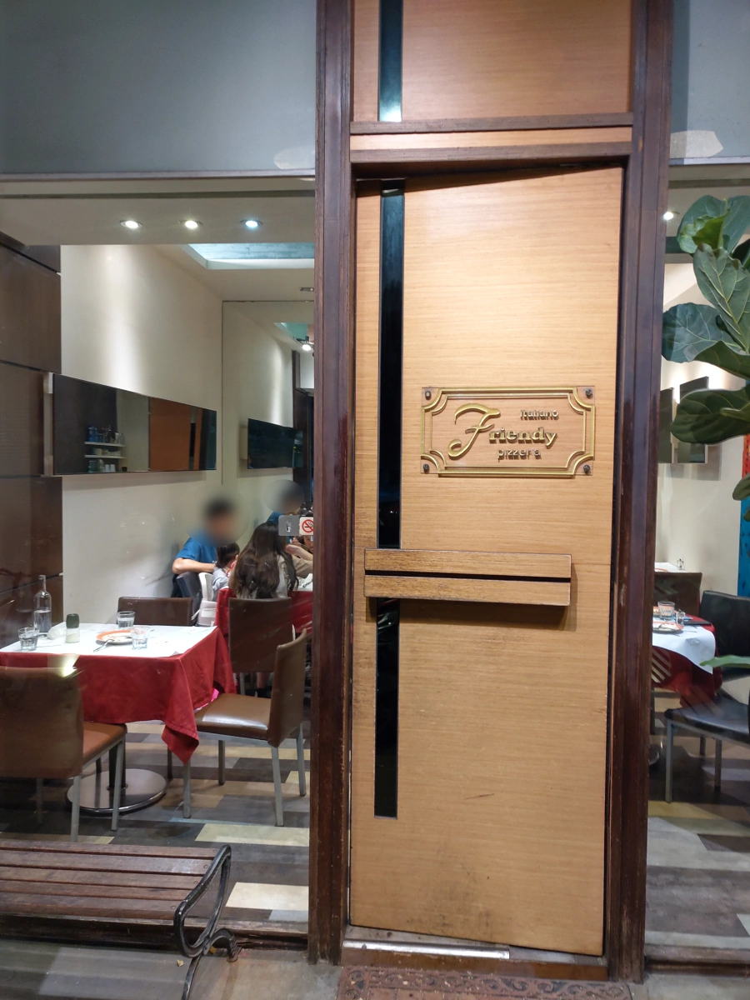
大約六點到，兩、三桌客人，正在奇怪這間餐廳怎麼了，結果吃到六點半，就幾乎客滿了。外帶一直都有一、兩位，在門外等。 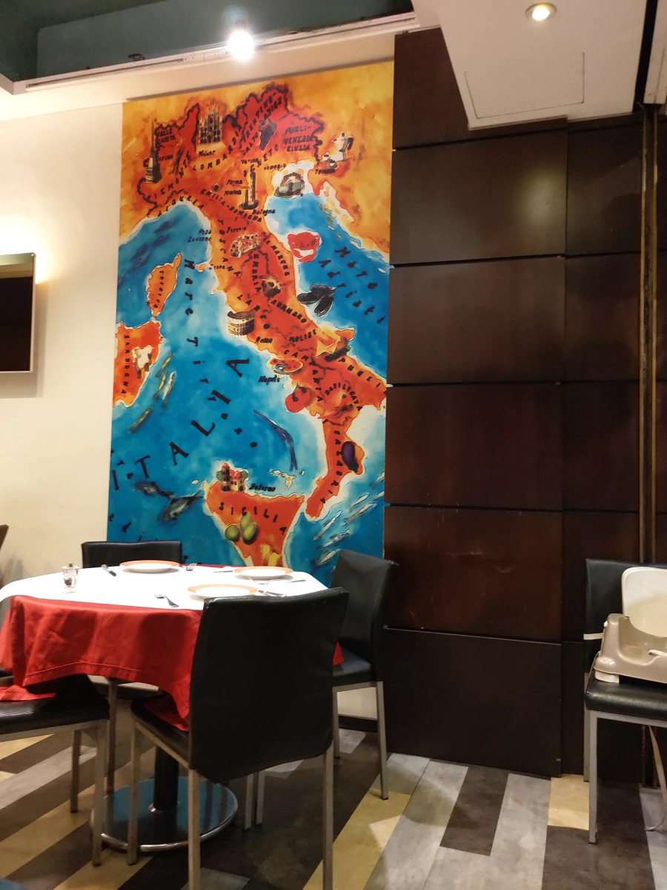 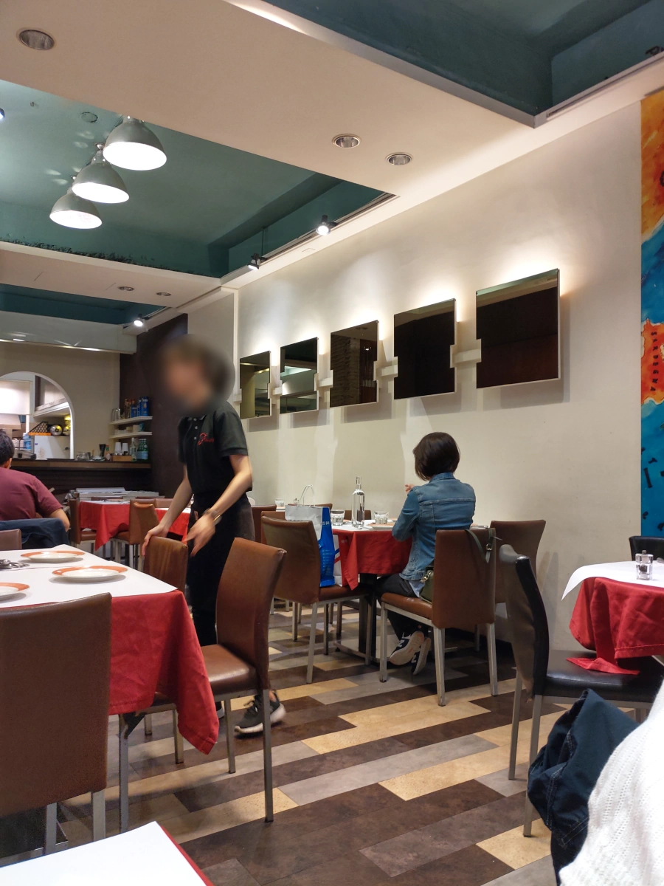
匆匆忙忙點菜，忘了拍菜單，只好借官方網站的菜單，希望老闆不要介意。這圖片品質也通常比我拍的好很多。 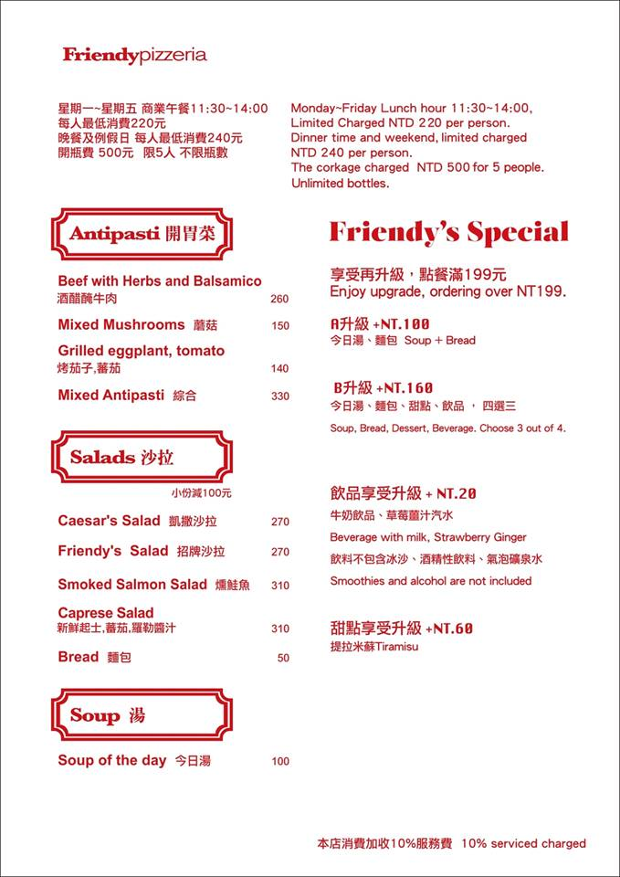 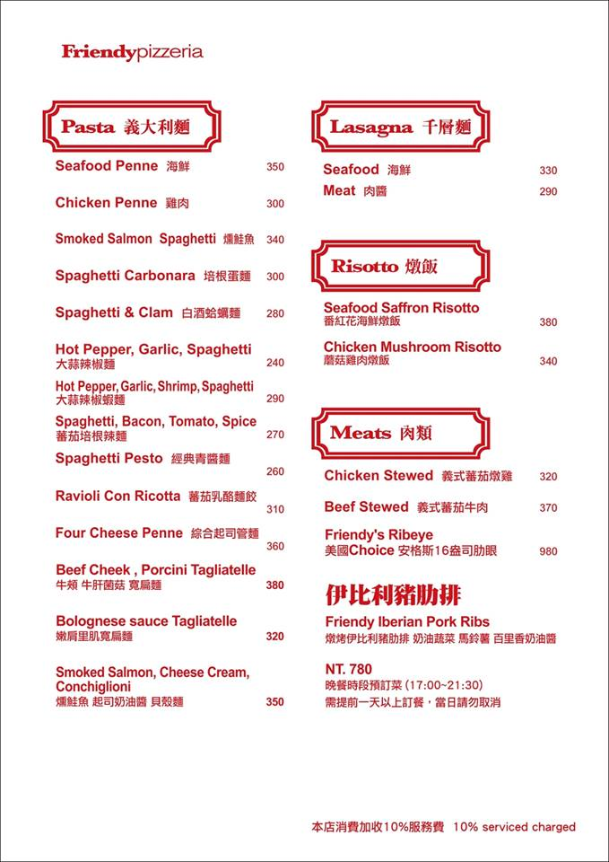 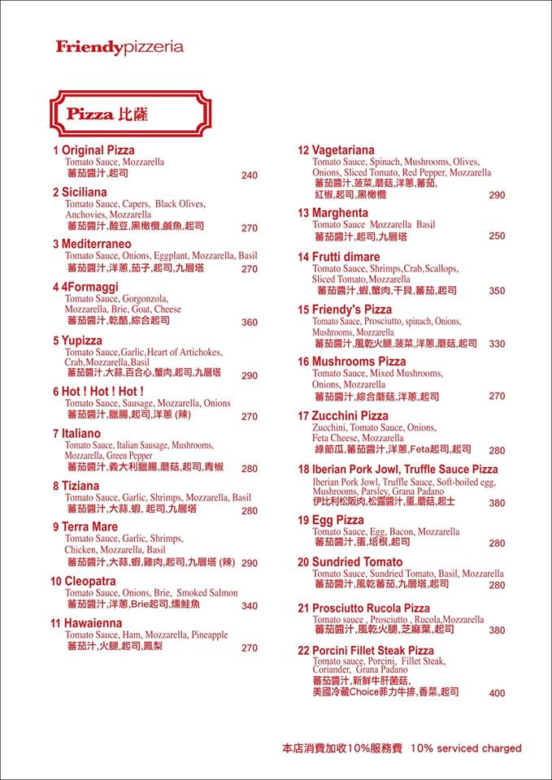 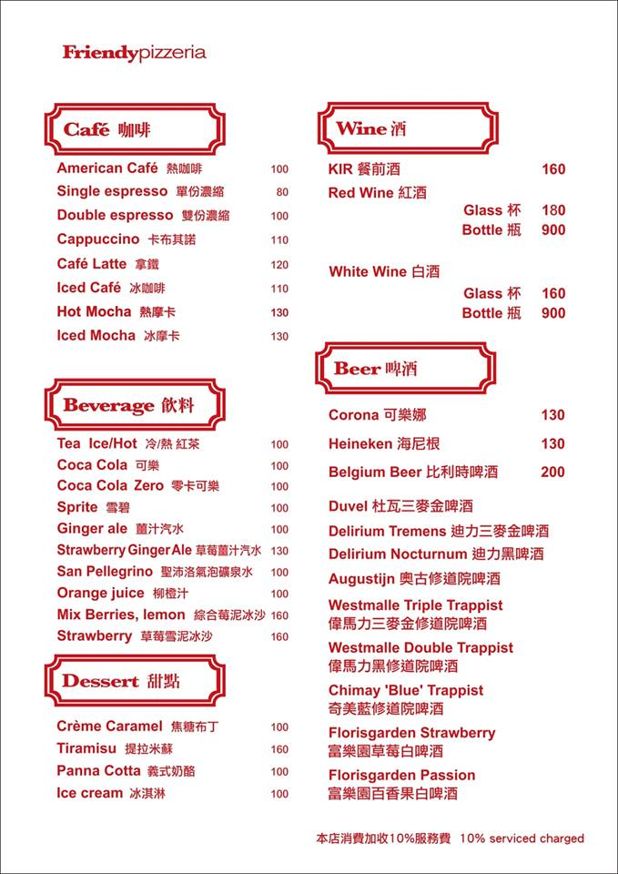
附餐的湯，感覺是 白花椰菜泥 與 馬鈴薯泥 煮成高湯，湯頭相當好喝，不錯的湯。 叫我直接吃白花椰菜的話，我是頗不愛的，喝這湯我就願意了。 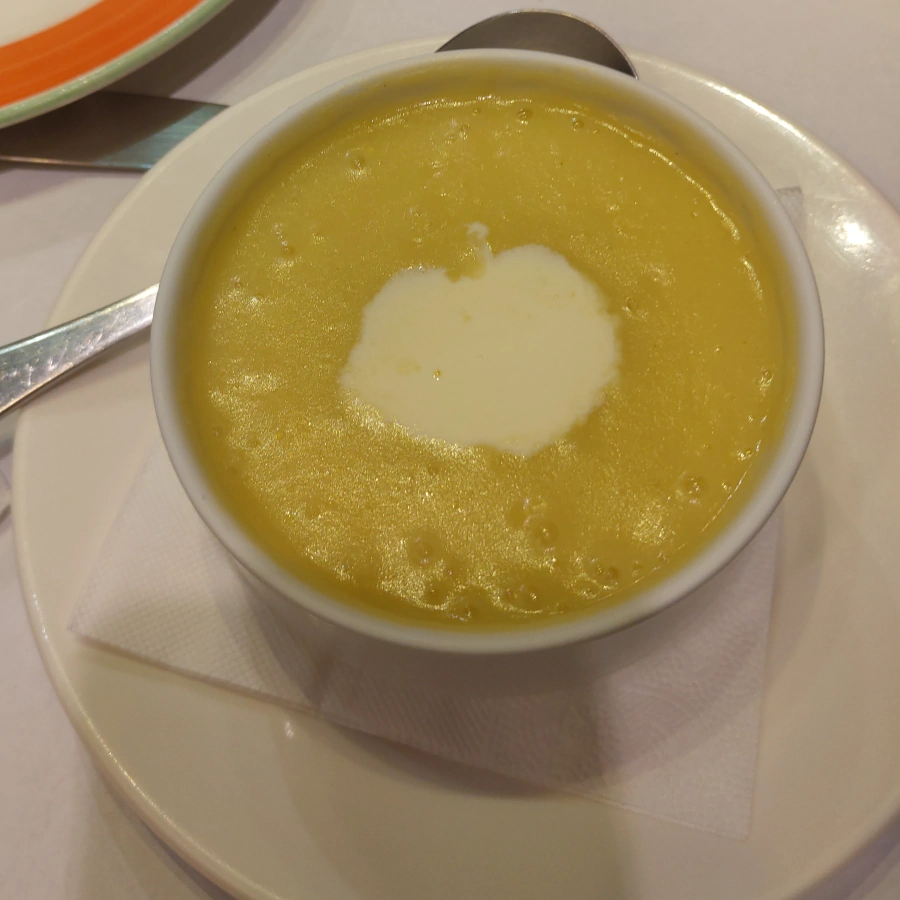
附餐的麵包，這是Friendy 的特色麵包，麵團應該是與 Pizza 的麵團一樣，弄這麼長條就是店家設計的噱頭， 一般人第一次到Friendy大概看到會哈哈笑吧，然後一起分享。這個麵包，中間鬆軟，有麵粉的香氣，熱熱吃挺不錯的，只有兩頭一點焦掉，可以撕掉。
搭配的醬是 青醬泡在油醋中。我不是那麼愛酸，有沾幾次，另一部份麵包就不沾醬吃，直接品嘗麵香，再一部份麵包沾湯吃，也挺好的。 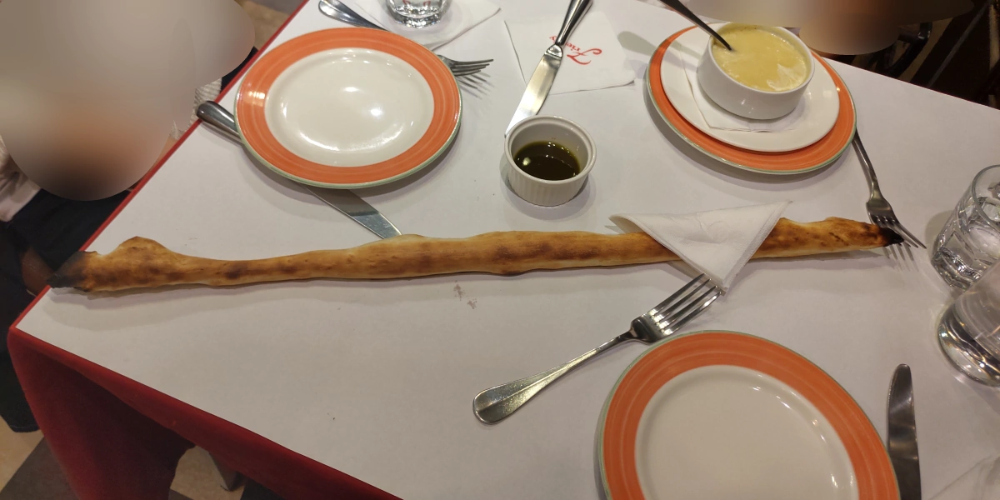
培根蛋麵，蠻好吃的，店家很大氣，培根很多，起司也下很多，味道濃郁鹹香。小缺點是容易膩，可是比起味道清淡的麵，還是讓我膩好了。 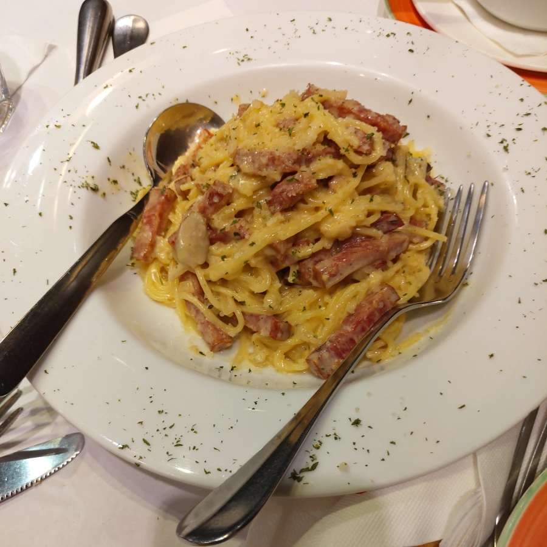
沒選什麼特殊Pizza ，就挑 Friendy Pizza ，用店家名字當菜名，應該是招牌吧。果然沒猜錯，薄火腿夠鹹，底下青菜竟然能維持綠色，可能分兩段烤吧? 總之，一口咬下，麵糰香，火腿鹹，青菜、起司、蘑菇的味道也融進來，好吃的Pizza 。 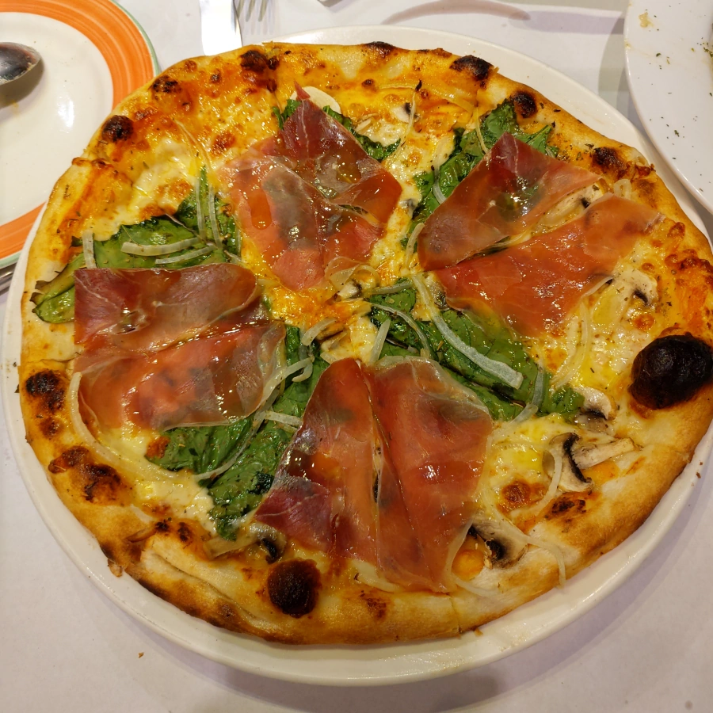
最近要補鐵，所以點了16 盎司肋眼牛排，5分熟。這牛排煎的不錯，外表微焦，略脆，中間紅色，軟嫩。提供的調味料只有鹽，店家是原味派的。 唉，不過我是怪人，我還是喜歡搭配 黑胡椒醬，甚至是不常見的 綠胡椒醬、或是 廚師另外精心熬煮的醬汁。 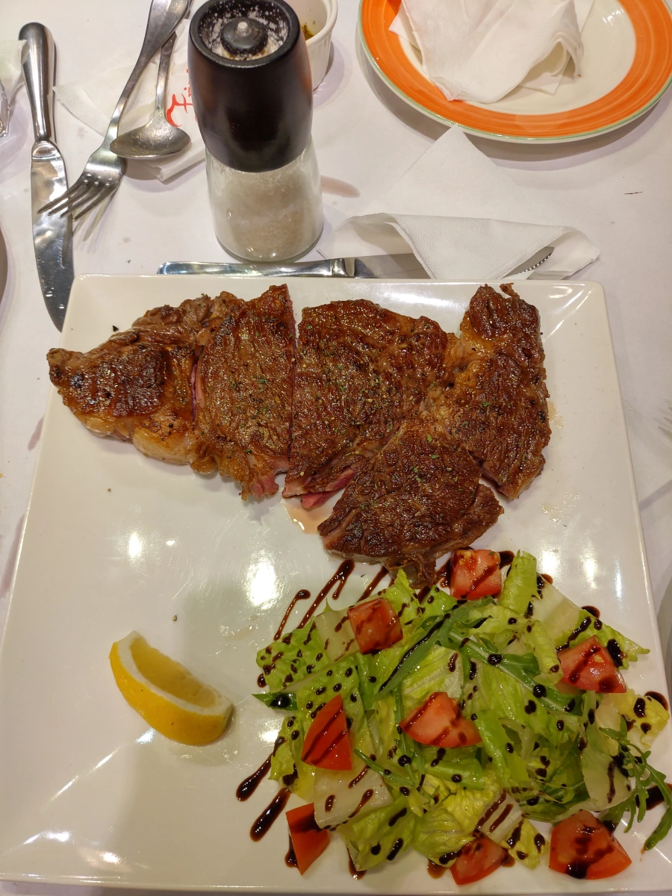
附餐甜點升級為提拉米蘇，巧克力粉略苦，不過其他的部分鬆軟甜，優秀的甜點。 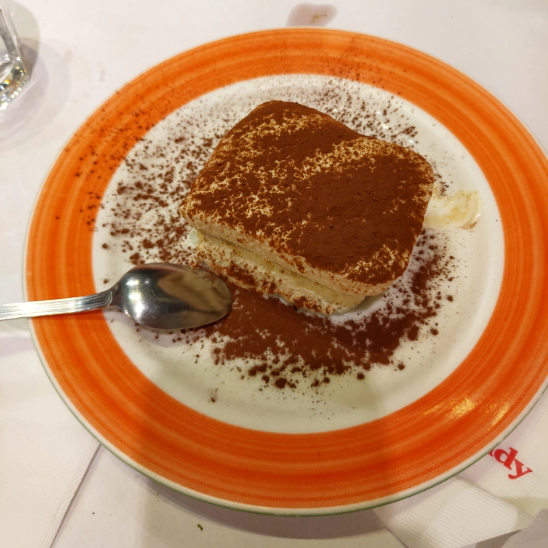
好幾年沒來 Friendy 了，不愧是屹立不搖的老店，品質依舊，今天一樣覺得好吃。稍微奇怪的是老店怎麼員工都很年輕， 廚師感覺也年輕，本以為好歹有幾個資深的主廚、經理坐鎮，也許是我沒看到吧。這群年輕服務生、廚師也都很好， 餐廳品質跟多年前一樣。很高興看到 Friendy 長長久久，下次還要再訪。